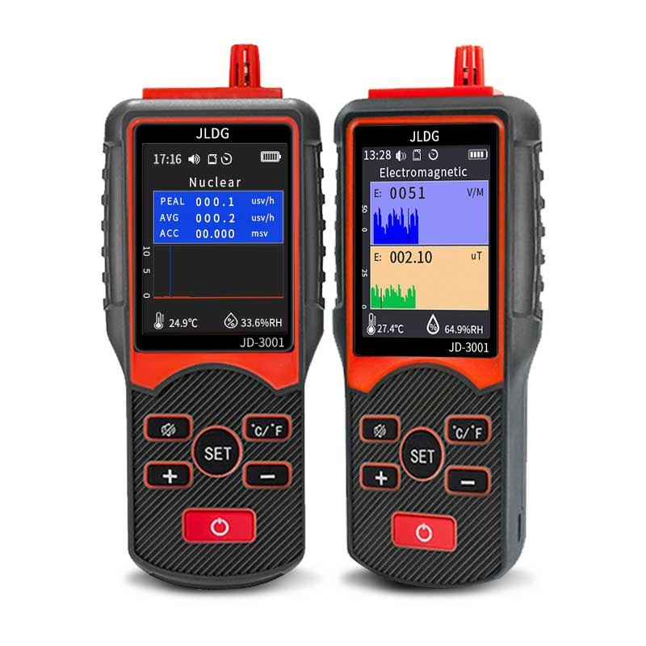

☢️ 1986·切尔诺贝利灾难模拟器
📜 历史背景与物理原理：
1986年4月26日凌晨，苏联切尔诺贝利核电站4号反应堆发生了毁灭性的超载爆炸。中子轰击铀-235会产生分裂（核裂变）并释放质能热量。当时，在副总工程师迪亚特洛夫强令违规操作下，自动控制系统和应急堆芯冷却系统（ECCS）被关闭。由于反应堆长时间低功率运作，堆内中子强吸收体“氙-135”大量积聚陷入“中子毒化阱”；此时汽轮机断电惰转测试开启导致冷却泵流量骤降，激活了蒸汽“正空泡反馈”正循环；最后一刻按下紧急停堆按钮 AZ-5 时，控制棒底端的“石墨置换端头”却瞬间排开轻水，诱发了极端的“正停堆效应”，终致狂暴的二次热爆炸冲飞了重达2000吨的钢盖。
🎮 游戏说明与操作：
1. 阶段式推进：游戏分为降温准备、中子毒化、断电测试、废墟盖革评估、信息隔离、风向能谱追溯和清理者战役（直升机/潜水/屋顶）等多阶段。
2. 高容错交互：通过控制面板、代码终端、潜水网格等控制局势。如果您使用的是手机，或操作精细度困难，每个动作阶段都配备了【文字指令 / 战术调度】选项，点击即可完美替代物理交互轻松过关！
3. 自动保存：进度会自动保存在本地缓存。点击顶部的“重置进度”可重新来过。大结局后将解锁独立的盖革模拟器沙盒！
1986年4月26日凌晨，苏联切尔诺贝利核电站4号反应堆发生了毁灭性的超载爆炸。中子轰击铀-235会产生分裂（核裂变）并释放质能热量。当时，在副总工程师迪亚特洛夫强令违规操作下，自动控制系统和应急堆芯冷却系统（ECCS）被关闭。由于反应堆长时间低功率运作，堆内中子强吸收体“氙-135”大量积聚陷入“中子毒化阱”；此时汽轮机断电惰转测试开启导致冷却泵流量骤降，激活了蒸汽“正空泡反馈”正循环；最后一刻按下紧急停堆按钮 AZ-5 时，控制棒底端的“石墨置换端头”却瞬间排开轻水，诱发了极端的“正停堆效应”，终致狂暴的二次热爆炸冲飞了重达2000吨的钢盖。
🎮 游戏说明与操作：
1. 阶段式推进：游戏分为降温准备、中子毒化、断电测试、废墟盖革评估、信息隔离、风向能谱追溯和清理者战役（直升机/潜水/屋顶）等多阶段。
2. 高容错交互：通过控制面板、代码终端、潜水网格等控制局势。如果您使用的是手机，或操作精细度困难，每个动作阶段都配备了【文字指令 / 战术调度】选项，点击即可完美替代物理交互轻松过关！
3. 自动保存：进度会自动保存在本地缓存。点击顶部的“重置进度”可重新来过。大结局后将解锁独立的盖革模拟器沙盒！
3200
30.0
1.00
0.02
手动控制棒组 (BC组)
AZ-5 安全罩
SKALA CENTRAL PROCESSOR V1986
SKALA>
八进制快捷指令（点击直接运行）：
DP-5V 辐射测量仪

0 . . . 1 . . . 10 . . . 100 . . . 200 R/h
耳机爆音监测中
4号反应堆残骸走廊探索
【任务指南】：使用鼠标或触控，点击与当前位置（闪烁绿格 ☣️）上下左右相邻的空格进行移动。避开红色瓦砾碎石（⚠️），逐步走到右下角标有 🔐 符号的机密保险箱处。
KGB 机密指令：切断长途电话插孔
拖动插头插线，切断标红的长途电话（Kiev, Moscow等），平息消息传播。
锗半导体伽马能谱仪分析
拖动红色参考同位素谱线，将其与蓝色实测谱线重合，以识别大气颗粒成分。
☢️ 盖革计数器沙盒模拟器
核物理实验室辐射计仪表板。可手动调节中子束通量与衰变源强度，或测试常见物体的辐射指标。
0.12 μSv/h
当前测试源：【天然本底辐射】。属于大自然正常存在的宇宙射线与地表微量衰变。盖革计数器发出零星的喀哒声，完全安全。
正在连接中央仿真控制系统...